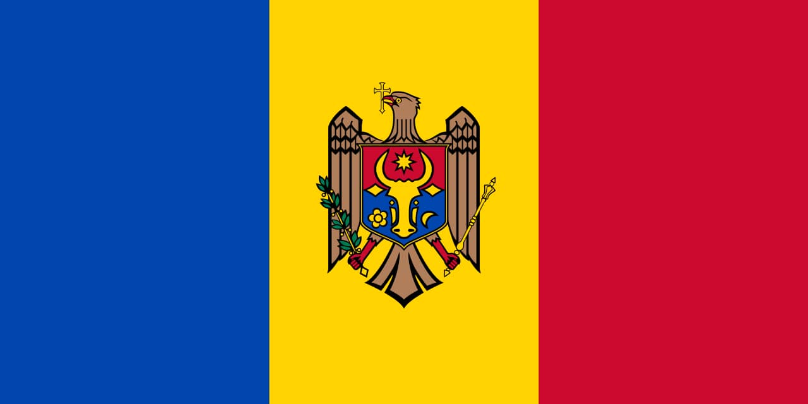

Ion Malanca
About me
My name is Ion, I was born in Moldova, but I've lived all over the world in the past few years. Including the United States, Norway and Turkey. Currently I live in Bucharest, Romania. I am a university student. I love to travel and explore the world, it's amazing to see all those cool places.
Chisinau, Moldova

Official Flag of
Moldova
Moldova is a landlocked country in Eastern Europe. Moldova is bordered by Romania to the west and Ukraine to the north, east, and south. The unrecognised breakaway state of Transnistria lies across the Dniester river on the country's eastern border with Ukraine. Moldova is a unitary parliamentary representative democratic republic with its capital in Chișinău.